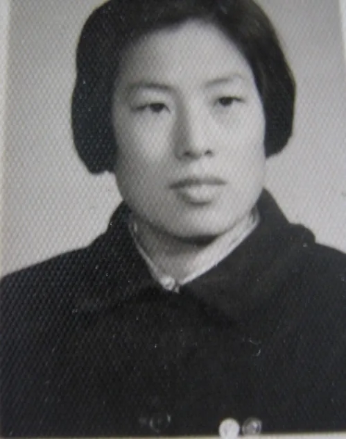
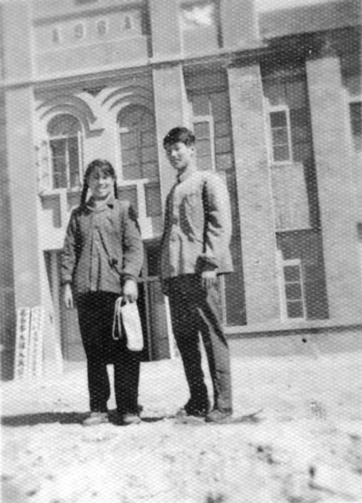

十 灰色青春
一九六零年的麦收时节，学校放麦假，教师们留校助农劳动锻炼。从毕业分配到西杜家小学工作，这两年半中，整风反右、三反五反等政治运动一个接一个。作为一个刚出校最年轻的新教师，虽然我没被扣到网中，但一封“匿名信”可让我受尽冤枉委屈，有口难辩。运动一来就找我麻烦，我成了他们应付运动的挡箭牌，几近崩溃，时刻想逃出这个人间地狱。无数次的被揭发批判，我已经不相信任何人，往日的同志朋友都被我看成了告密和举报者。我痛苦自闭，难以自拔。

幸好在一次大型教师集会中，碰到原来同校不同班的刘文申同学。他不避风险，约我做了一次长谈。听了他的鼓励和指点，我突然感到精神一振，知道了事情并没有那么糟糕，同学和朋友们仍然相信我、支持同情我，只是不敢明说。我一下子胆子大了许多，告诉他：“我爸爸五月份已经去东北了，我也想走，又怕走不脱后果更可怕！” 他当即表示自己早就想走，苦于没有门路，不知到东北能否找到工作。在那一刻我简直太激动了，真像久旱的枯苗逢甘霖，可找到知音了。自此我们偷着讨论出走的办法，联系越来越多，真的成了志同道合的朋友，一根绳上的俩蚂蚱。
三年的 “自然灾害”，又加 “大炼钢铁”，已是民不聊生。胆子大一点的农民大多都跑了，有的上西北，有的闯关东，老实的去要饭。那一年春天的早些时候，爸爸妈妈与掖县沙河镇那些坏头头斗争胜利了，王新亭县委书记亲自处理了镇委刁难我家的问题，允许爸妈离开掖县。搬家到潍坊后，为了给家里多挣一份口粮，爸爸很快就到了东北，在那儿行医治病。早先沙河镇虽然以我家已经搬到平度县为借口，私自取消了我们家的户口，但粮食系统他们管不着，加上管粮票分发的邢会计是妈妈的好朋友，每个月我都是先去找她再到掖县粮库走后门托熟人，领出全家人的粮票寄回家去。全家人搬到潍坊，户口和粮食关系也转走后，不再需要我每个月到沙河了。我已完成使命，脱身没有问题了，于是决心马上逃出狼窝，前往东北。
趁放麦假之际，我拿着早备好的一封妈妈病重需要速回的证明信，去找校领导杨希进请假回在潍坊的家。这个混蛋躺在床上装睡，不理我。我那时主意已定，已经豁上，什么也不怕啦。我不再理他，出门就去搬自行车，他急了，一骨碌爬起来问我：“ 范老师你上哪儿？” 我说：“到中心校（沙河镇完小）找孙校长请假。我妈妈病了，我必须马上回家。” 他看拦不住我，只好让我走。我把早已铺好的床铺，用一床旧褥单一遮，经常用的行李箱仍摆在那里，装出一副去去就回的样子，实则重要的东西全部被我拿走了。
回到潍坊第二天晚上，妈妈送我到车站，我顺利地乘上了去东北的火车。那种感觉太奇妙了，觉得自己就像挣脱了绑绳，冲出了牢笼。胶东籍的人大都走水路外逃到大连，再去东北，而那时潍坊火车站还没有掖县的劝阻队，因此上火车时也没被逮到。本地的劝阻队很多，年轻人很难逃脱。有好几个我认识的人，在车站被拦下扣住，就是犯人了。幸运之神照顾了我。

回到潍坊第二天晚上，妈妈送我到车站，我顺利地乘上了去东北的火车。
乍到东北的大通沟煤矿在文教科工作。每天都看到矿上一批批天南地北挂号来的新人，操着不同口音。大家都是“盲流”（盲目流入者）。因经过三年的饥荒，大多数人，为吃口饱饭而背井离乡，互相同情。到了矿上就可以吃到“大碴子”和棒子面的发糕，基本上可以吃饱不挨饿了，我高兴！
我更高兴的是那里的确自由，没有了山东那股人人自危的压抑气氛。大伙刚认识，互相不设防，在一起随便说说话，不怕谁告状。下了班，大家在一起开玩笑逗乐子。周日去山上采蘑菇，到水库大坝上看钓鱼，随便走走玩玩，感觉天地开阔。我马上写信告诉刘文申，告诉他七月底矿上会停止挂号，想来要快。果然他在暑假期间逃过学校的盯梢，来到我在的矿上，后来与我一样也被安排到夜校工作。

当时矿上招的新工人很多，职工的业余文化教育又被重视起来了。文教科需要招聘更多有文化的人到重新建立的夜校给职工上文化课。我正好赶上，给机关干部们上了第一堂课，高玉宝的《我要读书》。从矿长、书记到各科室人员，全矿都听了我的课，他们见面都很友好地叫一声范老师。我就成了教育科的第一个女教师。几天后，又挂号招来了几个女老师。科长告诉我：“经矿领导研究，给你订的工资是38.61元，新来的女老师都比你的工资低两元，女教师中你的工资是最高的。” 我很高兴，觉得新生活开始了，有奔头了。虽然那时，住大房子吃食堂，生活用品无处买，用的穿的都紧缺，但我一点也不在乎，每天生活得舒心快乐。三个月后，矿上组织助农活动，夜校全体教师和一部分机关干部被送到青山农业社去助农劳动，生活比矿上更加艰苦，但我们仍然高兴，幻想着更加美好自由的前景。
可是好景不长，有一天中午饭的时间，刘文申突然拉我一把，示意我赶紧离开，灾祸来了。他告诉我：“张连才来了。他是掖县某学校的校长，肯定是冲着咱俩来的，赶紧走人。”
我们顾不得吃饭，悄悄地离开青山到城子河矿躲起来，让他们扑了个空。躲了一周后，我们回矿。矿领导说：“山东来的人，要求矿保卫科派人，帮助他们逼迫你们回去，遭到矿上拒绝。他们跟高部长吵僵了，赌气自己到了青山的助农点上，又没见到你们，肯定是又憋气又窝火。” 高部长说：“这样的事情太多了。来要人的，都会扯出很多莫须有的罪名，逼人回去。我们的原则是，本人自愿回去，我们不拦着；强制，我们不允许。你们是国家招收来支援边疆建设的。既然不愿回去，可以继续留下工作。不用怕，都在共产党的领导下，矿上支持你们。” 我们逃过了第一次，可是第二次就没有那么幸运了。
半月以后，我们晚饭后正在聚会。张连才和一个公安战士突然闯进来，不容分说强逼我们回山东。这一次他俩是瞒着矿上，偷偷潜入我们的助农点才堵住我们的。当晚天色昏暗，我们抹黑步行走过结了冰碴子的草甸子，到了青山火车站，他俩一天来回两趟走草甸子累垮了。一上车，我劝刘不要管我快走，逃出一个是一个。火车开出两站地，趁停车的瞬间，刘跳下车走脱了。那时候我想得很简单：我没做任何犯法违法的事情，若还是为那封匿名信，我回去正好把事弄清楚，免得疖子不出浓早晚是块病。所以，毅然决定跟他们回去。
就是这天真的想法，使自己陷入了更大的苦难中。那天半夜，火车到了哈尔滨站，张连才告诉我，他俩明天要去带沙河戏院子的很多人 ，因为早已约好一起返回山东，所以先给我安排一个住处休息一晚上，明天大家一起走。但我没想到这俩混蛋使坏，把我送进了哈尔滨一个监狱里住宿。
监狱长把我当罪犯对待，不问青红皂白，叫我把身上带的物品统统交出，把腰带、鞋带解下来没收，将我推进了女犯监视室。我吓懵了，只见地板上横七竖八躺满睡觉的女犯人。见我被推进来，有个披头散发像魔鬼一样的女子，突然翻身坐起来，一把抓住我的衣服掏我的衣兜，发现有半块吃剩的窝头，她就像饿鬼一样一下塞进口里，接着又掏我的裤兜，发现是空的，嘴里边吃边骂“穷鬼”......
地板上根本没有插脚的地方，我挤来挤去，才在骚臭难闻的座便器旁边挤出一点空间，坐了下来，感到心惊肉跳，一夜没敢合眼。借着昏暗的灯光，看一下目光所及的地方，这好像是一座大楼的地下室，长长的一排用铁栅栏隔开的很多房间里关满了男罪犯。女犯们关在对面比地面高出一米多的错层监房里，女室的前门朝外，后墙是栅栏，与男号的栅栏相对。中间是一条长廊，是警察们值班的地方 。隔一段就看到有一个值班的看守，仰面朝天躺在躺椅上，翘着二郎腿露着大肚皮，不像个好人样。因为是夜里睡觉的时间，整个房子里臭气熏天。
天蒙蒙亮，房内噪声四起，看守的呵斥声此起彼伏，犯人们哭叫喊骂，嘈杂混乱。女房里女犯们都伸着懒腰爬起来了，不梳头也没有地儿洗脸，一个个脏兮兮的蓬头垢面，仔细看看她们却岁数都不大。不知她们关进来几天。这间小屋子里，除了那个供她们大小便的大木桶，什么设施也没有。有个人粗声大气地问我：“为什么被抓？” 我说：“可能是盲流吧。” “瞎说，盲流不犯法。你撒谎，都到这里面了还装什么......” 一阵嗤笑，魔鬼们七嘴八舌自报家门了。有的说：“我耍流氓被抓。她是小偷失手。” 她们一点也不害臊，似乎在启发我，要像他们一样坦白。她们说着一些低级下流的脏话，有时还互相谩骂厮打，遭到看守的大声喝斥......这十几个小时的经历，似鬼门关，像阎王殿，是人鬼不分的活地狱。我见识了，心里悲愤难抑，气恼到了极点。
张连才来带我去火车站时，可能看我眼神不对，他俩很紧张，临上火车前，就给我带上了手铐。我一路羞愤冤屈，泪流不止。那种精神的打击，无可名状的悲戚，过度的刺激，我的精神崩溃，脑袋麻木了。车到潍坊火车站时我还记得，可是怎么下的火车，又怎么转乘汽车到掖县，带了一路的手铐啥时候没了，我恍恍惚惚，全不记得了。不知过了多长时间，我才明白，自己是被关进了掖县公安局的看守所。
那是一个大户人家的四合院，北屋大概五间，改造成第一监室。堂屋是警察值班站岗的地方，西头一小间关我。东边那几间墙壁打通，改造成很大的空间，一道通顶的栅栏。我透过西间门上的小窗口，能看见那里面关着很多男囚犯。这里监管很严，警察荷枪实弹站岗，昼夜几班轮换。犯人们不准说话，不准乱动，都得规规矩矩坐在铺着麦秸草的地上，歪着躺着都会遭到呵斥。我听到一人说：“报告上级，我后背刺挠，想挠挠。” “不准动！老实点！” 如果谁不听话，马上会来两个警察把他拖出去，一顿臭揍。这里是真正的活人的监狱。
我单独关在对面小房间，警察不管，呆了几天，又换到南屋第二监室里。这里比较宽松，由北房警察代管。也是五间房，东间已有一个男的住着，西间我住。地上铺一堆麦秸草，躺着坐着随便。我在整理草堆时，发现了半截大葱，对面房里男人说：“我快馋死了，把葱给我吧。” 我怕对面北屋值班警察看到，就把大开的门闭小一点，他也同样把另一扇门推小一点， 我趁机把葱扔给他。他一把抓起来就塞到嘴里咯吱咯吱嚼着吃。突然警铃大作，两个警察冲进来，把他抓了出去，审问半天才放他回来。原来北屋的值班警察，发现我们推门，以为我们互传信息，拉响了警报器。

他也同样把另一扇门推小一点， 我趁机把葱扔给他。
在看守所里，我无人管也无人问，也不说明为什么，就让我呆在里面，一住四十天。最恼人的是每天两顿饭，每顿只给一个鸡蛋大小的苞米面窝窝头，一碗玉米面稀粥，一小块萝卜头咸菜，把人饿得难受极了。几天后只想吃，想哭，顾不得生气想其他事情了。刚到掖县时还满腹气恼和委屈，想着见了领导们，我一定要与他们讲理打官司。长时间被晒着，不管不问，没有人搭理，时间一长，心就静下来了，苦苦思索分析，为什么这样对待我？想明白了，当时全国人口流动很厉害，掖县教育局知道教师队伍很不稳定，我是第一个出逃成功的，影响很大，随后刘文申教师也走了，致使许多教师都在偷偷筹划外流。把我抓回来，就是为了杀鸡儆猴，现在我就是那只倒霉的鸡，不管我对错，都会这样处理我。想明白了，就只好老老实实呆着熬吧。
每天来送饭的五号老头是炊事员，出于同情吧，他明着递给我的饭，还是一个窝头一碗稀粥，在粥底下，又给我藏了一个窝头。这就让我好过许多，非常感激他。
四十多天后，教育局彭严永局长来了。见到我，先是一顿假惺惺的赔礼道歉：“范老师对不起呀，你回来的前一天，我就下乡助农去了，整整四十天，回来才知道，你还在这里。太对不起了。回来就应该马上工作，你看我把这事忘了，让你受苦了，怨我都怨我......走，我先领你出去洗澡吃饭，休息两天。” 两天后叫我去掖县师范报到，暂时分配到物理教研组。四五个教师的组，却尔虞我诈勾心斗角。其中一个老家伙特别混蛋，看我与年轻的老师谈论东北的事特反感，警告我说：“你不能乱说乱动。你是来劳动改造的！” 以后我不去他们小组，到伙房帮厨去了。
寒假到了，学生和老师们都回家了，教育局没有地方安排我了。情急之下，他们草草刻印了一份文件捏造了几条罪名，把我开除出教师队伍遣返回家，派了一个人押送我回潍坊老家。到了潍坊东关派出所，人家拒不接受我的户口关系和其他证件。来人没有办法了，就把前一分钟还不让我接触的文件，一起扔给了我，并对我说：“你自己看着办吧！” 他转身走人，忙着去赶回掖县的班车了。就这样我这不明不白地四十天监狱生活结束了。唉，找谁说理去呀！
我回家见了爸爸妈妈，再也憋不住，眼泪夺框而出，半年的委屈一泄难收。爸爸看完我的材料，气得一拍桌子，骂道：“这些混蛋玩忽职守到了极点。真是欺人太甚，咱去告他！”
迫于经济压力，我打不了官司，必须马上工作挣钱糊口。户口落不下，粮食就不供给，没饭吃，没钱花，在潍坊没有办法留下，思来想去回到东北是我唯一出路。爸爸鼓励我：“在哪里磕倒,就在哪里爬起来。你一回去那些无稽之谈，人们的各种猜测或谣言，就会不攻自破，自动消失，证明了你是遭山东迫害被冤枉的。估计掖县的事情还没结束，住不了多久，可能还会出坏点子对付你。趁现在他们还没昏过来，赶紧走，先逃出去再说吧！”
事不宜迟，第二天晚上，我就坐上火车返回矿上，顺利地回到原单位上班了。两周后，接到爸爸的来信，说我离开家的第三天，掖县教育局就来人找我了，打着关心我的户口和工作的名义，问我哪里去了，并说是特来纠错，要撤回我带回家的第一封临时处分书，用第二份正式的换回第一份。爸爸当时接过文件看了一遍，愤怒极了，把脸一变斥责道：“你们也欺人太甚了，就凭这样的材料，你们就敢把人抓起来，监押四十多天。你掖县教育局真是胆大包天。两份材料不用换了，都给我留下，你走吧！你们不讲理，还有讲理的地方。” 弄得来人脸色青一阵红一阵，十分尴尬地走了。根据爸爸的描述，我猜到那是教育局的彭局长亲自来的呀。这一回算是把他们得罪到家了。爱咋嘀就咋嘀吧，豁上了！